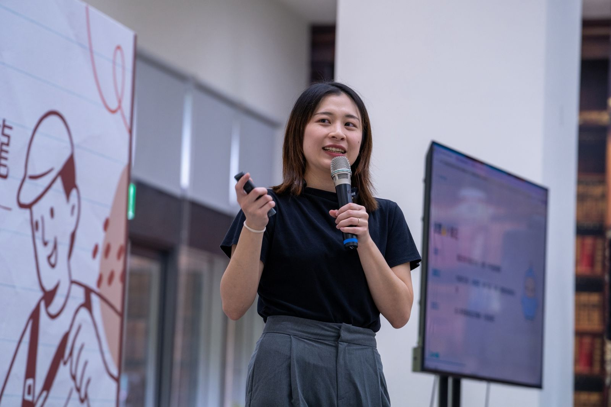
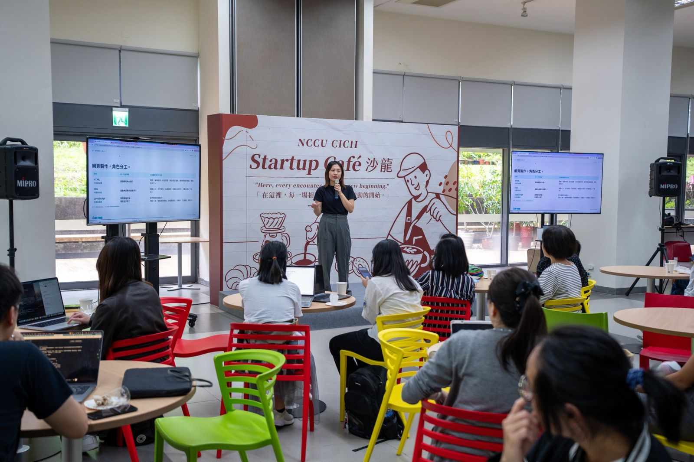
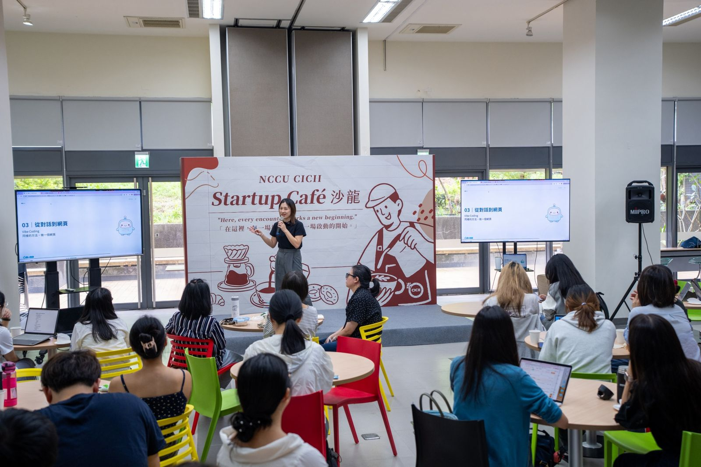
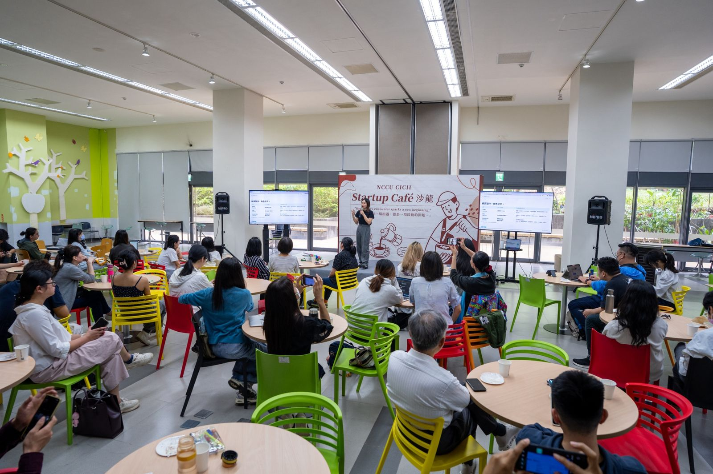
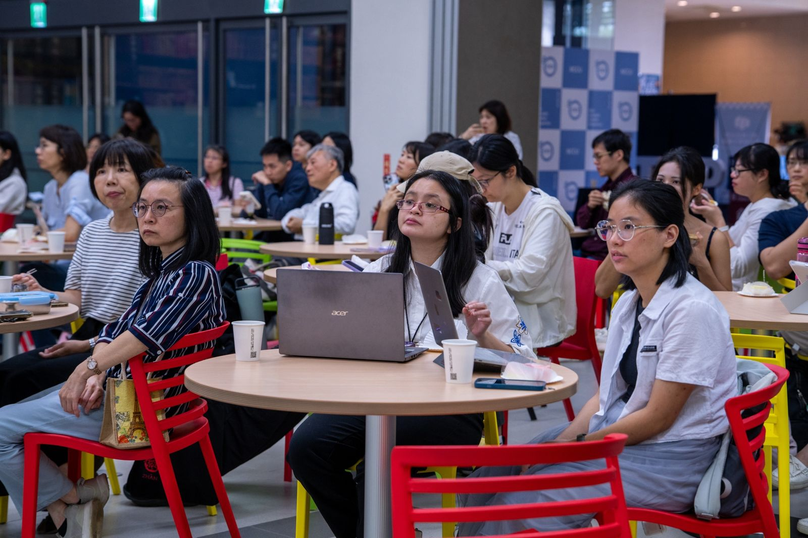
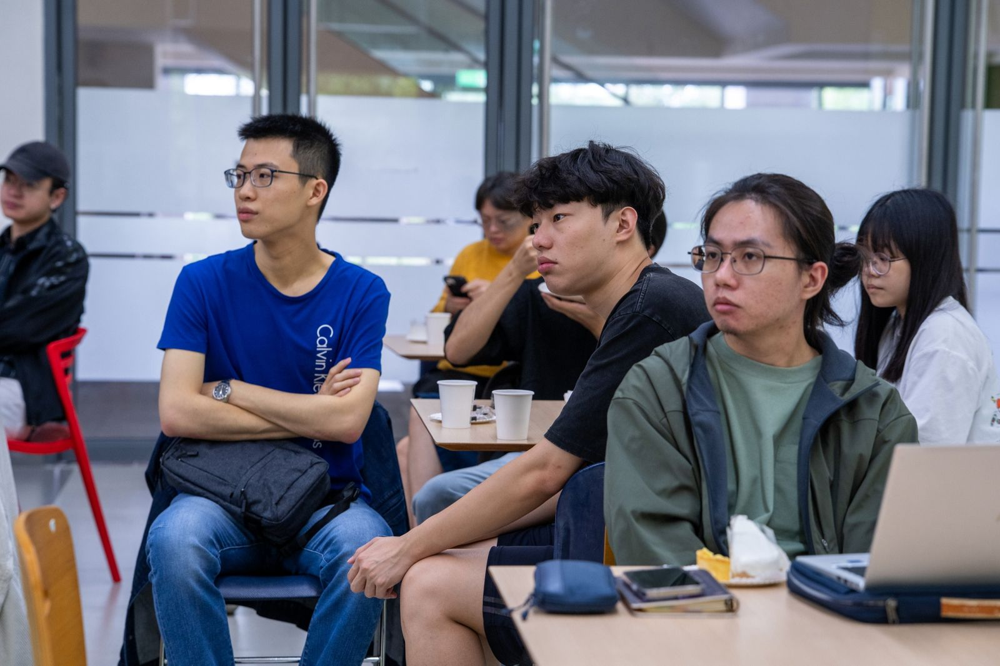
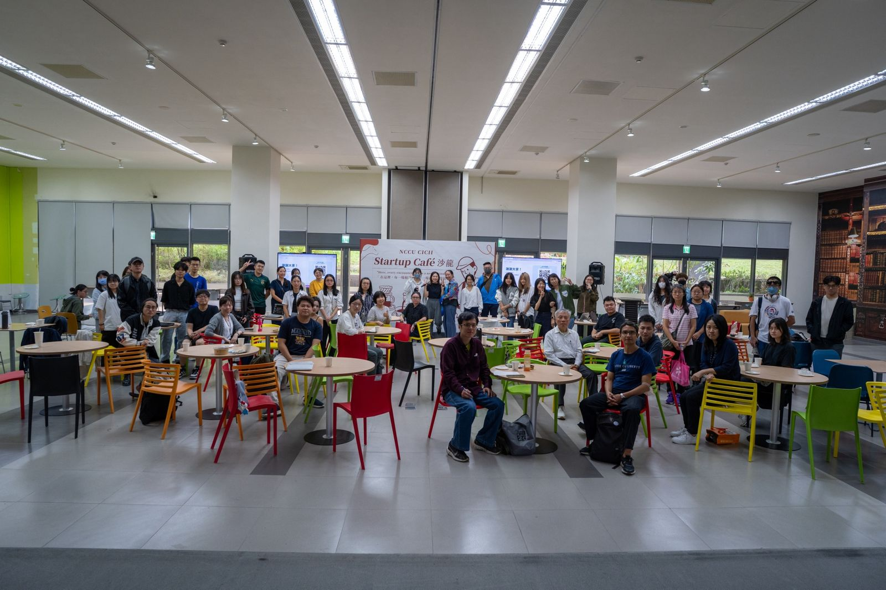

TALK · 2026.11.12
從什麼是 LLM？
AI Prompt 怎麼下才對？
受政大產創總中心邀請，在 Startup Café 沙龍和大學生、社會人士聊 AI 到底在「想」什麼，以及怎麼和它一起討論出好問題，最後把想法做成一個網頁。
- 近 80 人現場出席
- 4.83／5講師教學方式易懂
- 4.83／5課程內容有實質幫助


01 · 文字怎麼接
LLM 其實在做一件事：預測下一個字
開場用文字接龍拆解大型語言模型：它看前面的文字，替接下來可能出現的字打分數，再一個字一個字接下去。
既然只是在預測，它負責的是「看起來像」，而不是「是真的」。所以 AI 的回答要讀完、讀懂、查核過再使用。
「台股今天在……」後面要接什麼，全看前文給了什麼線索。

02 · 好問題一起想
好的 Prompt，是和 AI 討論出來的
用「請幫我介紹 Cat」示範：一句模糊的要求，AI 可能以為你在問貓咪。接著一輪輪補上人物、事件、用途與限制，讓回答越來越貼近目的。
兩個好用的方法：請 AI 先反問你，或請它給你幾個選項，最後再把討論整理成一份完整的 Prompt。
AI 給選擇，你定方向。

03 · 從對話到網頁
用 Vibe Coding 把想法做成網頁
先認識 HTML、CSS、JavaScript 各自負責什麼，再用 Vibe Coding 把同一則新聞做成一頁部落格報導：寫清楚需求、決定第一版範圍、給具體回饋修正，最後自己驗收。
現場
謝謝每一位來聽的你



4.83講師教學方式易懂（12 份問卷，10 位非常滿意）
4.75整體內容豐富度與實用性
最受歡迎「讓 AI 反問你」與「Vibe Coding 做網頁」單元
